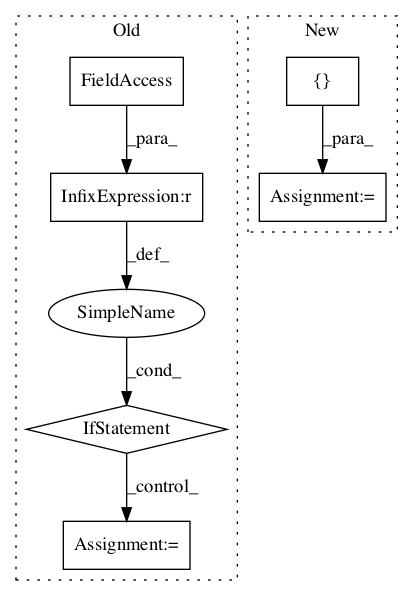

44ae6129731ee1d225db8a5f1bafea5fd4b9b542,open_seq2seq/parts/transformer/common.py,LayerNormalization,call,#LayerNormalization#Any#,70

Before Change
if self.norm_type=="layernorm_L2":
variance = tf.reduce_mean(tf.square(x), axis=[-1], keepdims=True)
norm_x = x * tf.rsqrt(variance + self.epsilon)
elif self.norm_type=="layernorm_L1":
variance = tf.reduce_mean(tf.abs(x), axis=[-1], keepdims=True)
norm_x = tf.div(x , variance + self.epsilon)
else:
print("WARNING: Layer norm: type ", self.norm_type, "not supported")
norm_x = x
y = norm_x * self.scale + self.bias
if dtype == tf.float16:
y = tf.saturate_cast(y, dtype)
After Change
dtype = x.dtype
x = tf.cast(x=x, dtype=tf.float32)
mean = tf.reduce_mean(x, axis=[-1], keepdims=True)
variance = tf.reduce_mean(tf.square(x - mean), axis=[-1], keepdims=True)
norm_x = (x - mean) * tf.rsqrt(variance + epsilon)
result = norm_x * self.scale + self.bias
return tf.cast(x=result, dtype=dtype)
In pattern: SUPERPATTERN
Frequency: 3
Non-data size: 6
Instances
Project Name: NVIDIA/OpenSeq2Seq
Commit Name: 44ae6129731ee1d225db8a5f1bafea5fd4b9b542
Time:
Author: null
File Name: open_seq2seq/parts/transformer/common.py
Class Name: LayerNormalization
Method Name: call
Project Name: kermitt2/delft
Commit Name: 56a16de2cd288032548267281a2daf69d479f8eb
Time:
Author: null
File Name: delft/sequenceLabelling/models.py
Class Name: BERT_Sequence
Method Name: __init__
Project Name: tensorlayer/tensorlayer
Commit Name: 35b2c4917344f338eda67c78673cf4064b3b4265
Time:
Author: null
File Name: examples/reinforcement_learning/tutorial_DQN.py
Class Name:
Method Name: